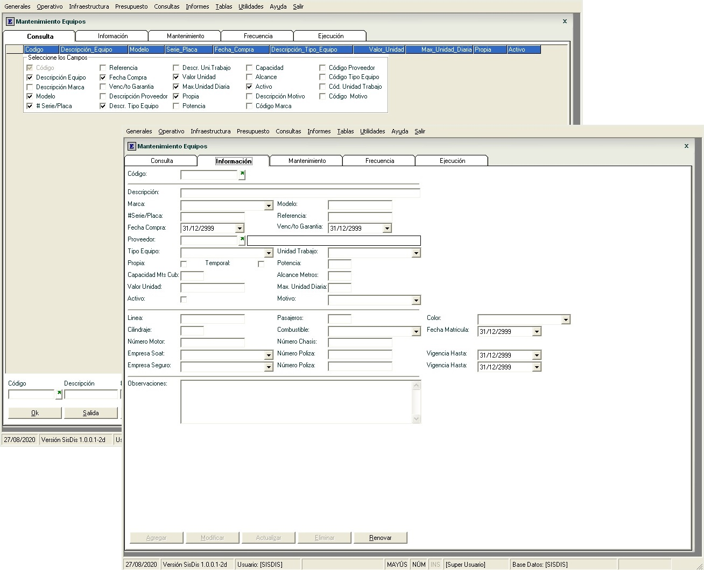
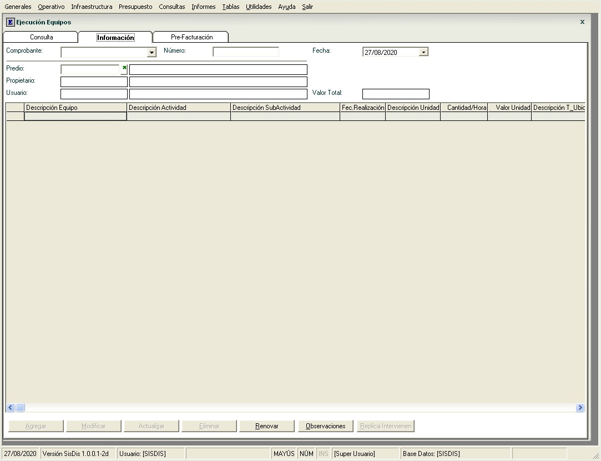

El modulo operativo es la base de todos los procesos que genera el distrito, para esto es importante tener en cuenta que se debe tener un registro general de usuarios, donde se debe guardar todos los parámetros que son necesarios al momento hacer las solicitudes de riego, planes de riego, boletas, liquidación, facturación y demás procesos operativos o de infraestructura.
El modulo de infraestructura es donde se maneja todo lo relacionado con la infraestructura del distrito como las obras, maquinaria y talleres.
El modulo de Canaleros es donde se puede consultar de la información de los predios, los propietarios, los usuarios y la captura de la información que los canaleros recolectan, evitando la transcripción de datos y agilizado el registro en el modulo operativo de la compañía.
Mantenimiento Predios

El Registro General de Usuario es el maestro donde se guarda la información relacionada con los predios que están inscritos en el distrito, esta información no solo es de tipo informativo, si no que es la forma de tener los datos con los que más adelante se procesara la información, al momento de realizar cálculos, filtros, selección, exclusión y operaciones con los predios.
Solicitudes Riego

Las Solicitudes de Riego son los documentos que se debe realizar de forma automática o manual para legalizar la solicitud de un predio ante el distrito para tener derecho al suministro de riego.
Autorización de Suministro de Agua estos documentos se elaboran una vez estén autorizadas las solicitudes de riego y el predio se encuentre a paz y salvo por todo concepto, llamando el documento de solicitud de riego para cargar la información que se encuentra en este documento y creando una relación para poder realizar seguimientos de cuando se realizo la solicitud de riego y cuando fue la aprobación.
Boletas Riego

Boletas de Riego estos documentos se crean cada vez que el propietario o usuario de predio solicita la apertura o cierre de las exclusas que suministran agua al predio, para poder crear las boletas debe haber una solicitud, debe estar aprobada y generada una autorización de suministro de agua.
Liquidación de Boletas este proceso es necesario para calcular cuánta agua se ha entregado a cada uno de los predios por medio de las boletas de riego que fueron solicitadas por los propietario o usuarios, para poder realizar este proceso los predios deberán tener una boleta con estado de finalización.
Facturación Volumétrica Una vez que se ha calculado el volumen de agua entregada se podrá realizar la facturación, para esto es importante validar los topes de consumo mínimo que maneja el distrito para cada uno de los estados vegetativos que se calcularon en la autorización de suministro de agua, si está por encima del tope se facturara según el factor que maneja el distrito para la campaña en que se trabajo el predio, de lo contrario se facturara basado en el tope mínimo por el factor definido para la campaña en que se trabajo el predio.
Facturación Fijas

Facturación Tarifa Fija este proceso de facturación se genera para todos los predios inscritos en el distrito, se realiza en periodos específicos o cuando el distrito necesita recaudar por algún concepto que la junta o asamblea haya autorizado.
Facturación por Items este proceso de facturación se genera para todos los predios inscritos en el distrito, es importante poder facturar con los parámetros que se deben definir.
Facturación por Terceros este proceso de facturación se genera para todas las personas ajenas al distrito, es importante poder facturar con los parámetros que se deben definir.

Mantenimiento Equipos
Hoja de Vida Maquinaria es el maestro donde se tiene toda la información de la maquinaria que maneja el distrito, esta información no solo es de tipo informativo, si no que es la forma de tener los datos con los que más adelante se procesara la información, al momento de realizar cálculos y operaciones con las maquinarias.
Orden Equipos

Orden de Maquinaria por medio de este proceso se crean las solicitudes que realizan los propietarios o usuarios al distrito de la maquinaria que necesitan para desarrollar su labor.
Orden de Obras en este proceso se crean las solicitudes que realizan los propietarios o usuarios al distrito de las obras como hechura o arreglo de compuertas, obras, rocería, dragado, nivelación laser, para así tener en buen estado la infraestructura que necesitan para desarrollar su labor.
Ejecución Equipos
Ejecución de Maquinaria este es el proceso donde se describe de las solicitudes de maquinaria que se realizaron, cuantas horas llevo realizarlo referente a lo solicitado, a que predios se les debe cobrar, que porcentaje debe pagar cada uno de los predios o qué porcentaje del área de cada predio se va tener en cuenta al momento de facturar.
Ejecución de Obras este es el proceso donde se describe de las solicitudes de obras que se realizaron, cuantas horas llevo realizarlo referente a lo solicitado, a que predios se les debe cobrar, que porcentaje debe pagar cada uno de los predios o qué porcentaje del área de cada predio se va tener en cuenta al momento de facturar..
Programación Equipos

Programación de Maquinaria es la hoja de ruta de la maquinaria y donde se encuentra la asignación de cada una de solicitudes realizadas por los propietario, usuario y tiempo que el distrito utiliza la maquinaria, aquí reposa las horas que trabajara cada máquina, en que ubicación se encuentra y que actividades está realizando, también se debe poder programar manualmente para asignar la maquina a una actividad específica en una fecha, hora y ubicación.
Programación de Obras es la hoja de ruta de las obras y donde se realizaran, según la solicitudes realizadas por los propietario, usuario y de la programadas por el distrito, aquí reposa las horas que se empleara para realizar cada obra, en que ubicación se realizara y que actividades están haciendo, también se debe poder programar manualmente para asignar obras a una ubicación específica en una fecha, hora y ubicación.
Consultas

Consultas documentos, facturacion, cartera, cartera distrito, consumo año - campaña, predios, volumétrica año – campaña, volumétrica consumo – campaña, consumo por fecha.

Módulo Canalero
Consulta de la información de los predios, los propietarios, los usuarios y la captura de la información que los canaleros recolectan, evitando la transcripción de datos y agilizado el registro en el modulo operativo de la compañía.
- Pantalla de consulta para consultar la información de los datos del propietario, usuario y predio.
- Pantalla con información de las boletas que tiene cada predio, retroalimentado al canalero para la supervisión de las exclusas.
- Pantalla de consulta de cartera de los clientes con los documentos pendientes y los valores aplicados, detallando la información de los pagos y así poder entregar información actualizada a los clientes.
- Pantalla de captura de las boletas permitiendo al canalero ubicar el predio por el propietario, por la descripción o el código, seleccionando la campaña, el cultivo, la variedad y así poder capturar la hora y los litros, llevando un consecutivo por cada canalero.